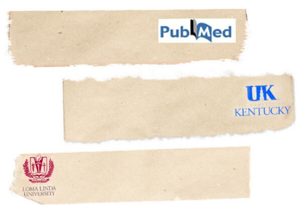
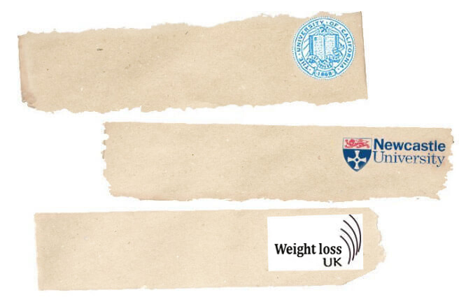

This is a great deal. My mom got this, but at
full price and has lost 10 Kg. I am doing it.
दिल्ली के डॉक्टर ने खोजा प्रतिदिन 1 किलो वजन कम करने का आसान तरीका बिना किसी कसरत या परहेज के
वजन कम करने का सबसे पहला-प्राकृतिक उपाय
|  1,759,245 |
1,759,245 | 
featured in
हमें हमारे पाठकों द्वारा सैकड़ों ई-मेल आ रहे हैं जो इस नए तरीके का प्रयोग करके प्रतिदिन 1 किलो वजन कम कर रहे हैं। पहले तो हमने विश्वास नहीं किया और इसे नजर अंदाज करने का फैसला किया जैसा कि वजन कम करने के हर लुभाऊ तरीके को करते हैं, लेकिन इसके परिणाम बेहद आश्चर्यजनक थे तो हमने इसके बारे में पता लगाने और पूछताछ करने का फैसला लिया। हमारे बहुत से पाठकों ने 30 दिनों के अंदर कम से कम 28 किलो तक वजन कम किया है वो भी बिना किसी कसरत, दौड़-भाग, महंगे ऑपरेशन या अपने पसंदीदा खाने से दूर रहके! स्वास्थ्य रिपोर्ट ने यह निर्णय लिया कि जिस व्यक्ति ने इस क्रांतिकारी उपाय का अविष्कार किया उसका पता लगाएं और उनके इस आविष्कार करने की कहानी के बारे में जानें।
जाने माने जैव-चिकित्सक डॉक्टर सिद्धार्थ कुमैल को इस उपाय को खोजने का और वजन घटाने के उद्योग-धंधों के सालों से छुपाये बड़े झूठ से पर्दा उठाने का श्रेय दिया जाता है। डॉ. सिद्धार्थ कुमैल ने इस क्रांतिकारी उपाय की खोज तब की जब वह एम्स नई दिल्ली के प्रतिष्ठित अनुसंधान विभाग में काम कर रहे थे, और अब दवा बनाने वाली कंपनियां कोशिश कर रही हैं कि यह आसान सा उपाय प्रतिबंधित कर दिया जाए। इससे पहले कि यह तरीका अदालत की प्रणाली के चक्कर में पड़े, आप पढ़ लें कि बिना किसी कसरत, परहेज, महंगे और दर्दभरे ऑपरेशन के कैसे प्राकृतिक तरीके से अपना वजन कम कर सकते हैं!
डॉ. कुमैल की आश्चर्यजनक खोज...
हर आम दिन की तरह ही वो भी एक आम दिन था जिस दिन मेरी जिंदगी पूरी तरह से बदल गयी। मैं अपने बायो-इंजीनिरिंग क्लासेज में पढ़ाने और एम्स टीचिंग हॉस्पिटल में चक्कर लगाने के बीच में था तभी मेरी मां का फोन आया। उन्हें पता था कि मैं काम में व्यस्त होऊंगा तो वो कभी फोन नहीं करती थी जब तक की कोई महत्वपूर्ण काम नहीं हो। जब मैंने उनका नाम अपने फोन में देखा तो मैं तुरंत ही घबरा गया और फोन उठाया।
आगे उन्होंने जो मुझे बताया उसने मुझे पूरी तरह से तोड़ दिया। मेरे छोटे भाई कपिल, जो सिर्फ 33 साल का था, उसे बहुत बड़ा हार्ट अटैक आया था और उसे एम्बुलेंस द्वारा उसी अस्पताल लाया जा रहा था जहां मैं काम करता था।
मैं क्लास से बाहर निकला और दौड़ते हुए नीचे की ओर गया। मेरी आंख में आंसू आ गए थे और मैं सोचने लगा था कि क्या मेरा भाई ठीक होगा? हार्ट अटैक कितनी बुरी तरीके से आया होगा? क्या उसे ऑपरेशन की जरुरत पड़ेगी? मैं जानता था कि मैं अपने भाई का ऑपरेशन नहीं कर पाऊंगा क्योंकि मैं बहुत भावुक हो गया था। मैं अपने दिमाग में उन सहयोगी डॉक्टरों के नाम सोचने लग गया था जो मेरी जगह ऑपरेशन कर सकते थे, लेकिन आगे जो हुआ वो उससे भी ज्यादा बुरा था जितना मैंने सोचा था। जैसे ही वे कपिल को इमरजेंसी रूम में लेकर आए, मैंने देखा की वह स्ट्रेचर पर लेटा हुआ है और हिल नहीं पा रहा है। वो सांस भी नहीं ले रहा था।
हम उसे एक प्राइवेट रूम में लेकर गए और मैंने बेसब्री से उसे पुनर्जीवित करने की 10 मिनट तक कोशिश की जो कि बहुत लंबे लग रहे थे। मैंने उसे तभी छोड़ा जब नर्स ने मुझे उससे हटाते हुए कहा कि अब वो नहीं रहा।
मैं पूरी तरह से टूट चुका था। मेरे भाई की महज 33 वर्ष की उम्र में मृत्यु हो गयी थी।
मैं उस दिन की भावनाओं से उबर नहीं पाया था। मेरी पूरी दुनिया मेरे सामने तबाह हो गयी थी। मुझे लग रहा था जैसे मेरी ये शिक्षा कोई काम की नहीं है। अगर मैं खुद के भाई को नहीं बचा पाया तो डॉक्टर होने का मतलब ही क्या है? मेरी मां भी सदमे में थी जब मैंने उन्हें यह बात बताई। उन्हें हफ्तों लग गए इस बात पर यकीन करने में कि उनका बेटा अब सचमुच इस दुनिया में नहीं रहा।
उन्होंने मुझसे बात करने से भी मना कर दिया। वो सोच रही थी कि मैं उसे बचा सकता था पर मुझे ये बात मालूम था कि मैं उस समय कुछ भी नहीं कर सकता था।
मेरी भाई की मृत्यु गहरा सदमा था, यह कोई रहस्य नहीं था। कपिल की मृत्यु का बड़ा कारण उसका मोटापा था। उसकी धमनियां भर चुकी थी उसे बस एक स्टेंट की जरुरत थी जिससे उसकी जान बच सकती थी। पहले मुझे लगता था कि हम 8 मिनट देर थे। अगर वो 8 मिनट पहले पहुंचता तो हम उसकी जान बचा सकते थे। लेकिन वास्तव में हम लोग कई साल पीछे थे। अगर केवल कपिल ने अपने मोटापे को गंभीरता से लिया होता। अगर उसे केवल यह अहसास होता कि अपने वजन की वजह से वह कितना अस्वस्थ और बीमार है। आखिरकार मैंने सैकड़ों मरीजों को सिर्फ मोटापे से होने वाली परेशानियों की वजह से जैसे हार्ट अटैक, स्ट्रोक और कैंसर की वजह से अपने बाहों में दम तोड़ते देखा है।
उस दिन के बाद मैं फिर से सर्जरी नहीं कर पाया, जब भी कभी मैं कोशिश करता तो मेरे हाथ कांपने लगते। जब भी कभी मैं ऑपरेशन टेबल पर किसी शरीर को देखता तो उसमें मुझे मेरा भाई कपिल नजर आता। मुझे पता था मैं सर्ज़री करने के लिए मानसिक रूप से तैयार नहीं हूं। कैसे भी, मुझे मोटापे के बारे में कुछ तो करना था और इसका उपाय ढूंढना था जिससे जो अनगिनत लोग अत्यधिक मोटापे के कारण मर रहे है उन्हें बचाया जा सके।
मैंने अपनी मेडिकल प्रैक्टिस छोड़ने का फैसला लिया और मैं एम्स में एक फुलटाइम प्रोफेसर और शोध विद्यार्थी बन गया। मैंने अपने आपको वसा कोशिकाओं के उत्पादन की विभिन्न प्राकृतिक निष्कर्षो के प्रभावों को पढ़ने में लगा दिया। मेरा लक्ष्य था कि मोटे पुरुषों और महिलाओं की जिंदगियों को बचाने का आसान रास्ता तलाश करूं। दुनिया में लाखों लोग अपने मोटापे से परेशान रहते हैं लेकिन अधिकतर के लिए खाने-पीने में परहेज का तरीका अनुसरण करना काफी कठिन रहता है। और तो और, अधिकतर वजन कम करने वाले कार्यक्रम, जिसे स्पा-क्लीनिक की से प्रसारित किया जाता है उनका खर्च 40,000-50,000 रुपये होता है, और इतने ज्यादा खर्च के बावजूद, जो परिणाम होते हैं वो बहुत ही दुखदायी होते हैं। वे सिर्फ आपके शरीर में पानी का भार काम करवाते हैं इसलिये एक महीने के अंदर आपका वजन फिर बढ़ जाता है। यही वजह है कि वजन कम करना प्रायः एक असंभव सा काम लगता है।
कपिल के अंतिम संस्कार के बाद मैं एम्स में सीधे अपने प्रयोगशाला गया। मैंने खुद से वादा किया कि मैं अपने जीवविज्ञान में विशेष ज्ञान का इस्तेमाल मोटापे का उपाय ढूंढने के लिए करुंगा, और बाकियों को बेवजह मौत से उन्हें बचाऊंगा। रोजाना मैं 6 बजे प्रयोगशाला में पहुंच जाता और इससे पहले कि मैंने कुछ करूं मैं अपने भाई की तस्वीर देखता और मुझे याद आता कि मैं वहां क्यों था।
मेरा प्रयोग खास तौर से पेट, कूल्हों और कमर में होने वाली असामान्य चर्बी पर केंद्रित था। मुझे पता था कि सालों से वजन बढ़ने की वजह से पाचन क्रिया धीमी गति से होती है, जिस वजह से लोगों के लिए चर्बी को प्रभावी रूप से कम करना कठिन हो जाता है। मैं एक ऐसा जैविक घोल बनाना चाहता था जो इस सख्त चर्बी को निशाना बनाए और साथ ही उसी समय शरीर की पाचन क्रिया को भी बढ़ाए।
मैंने प्रयोग पर प्रयोग किये, मैंने वसा कोशिकाओं का घोलनीकरण, छंटनीकरण, क्रिस्टलीकरण और पुनःक्रिस्टलीकरण करके इस रहस्य को सुलझाने की कोशिश की। यह काम बहुत ही ज्यादा और शारीरिक रूप से थका देने वाला था। मैं पूरा दिन वजन कम करने के तरीकों के प्रयोगों की खोज करता था और सारी रात उन्हें प्रयोगशाला में परखता रहता था। मेरा सबसे बड़ा प्रेणास्त्रोत मेरे भाई की तस्वीर थी। ये मुझे हमेशा याद दिलाती रहती थी कि दांव पर क्या लगा है।
दो साल के प्रयोग के बाद भी मेरे पास कोई ठोस समाधान नहीं था और मैं हताश होने लगा था। मेरे सहयोगी मेरी काबिलियत पर शक करने लगे थे, और मैं चिंतित था कि अगर मुझे इसका समाधान नहीं मिला तो मेरे भाई की तरह ही लाखों और लोगों मौत हो जाएगी। मैंने दुनियाभर की सैकड़ों असामान्य टॉनिक, फंगल उपभेदों और जड़ी-बूटियों की जांच की, हालांकि इससे मैं किसी परिणाम तक नहीं पहुंच सका। अब जांच करने के लिए मेरे पास आखिर फल ही बचा था और इसी के साथ मैंने योजना बनाई कि मैं इस प्रयोग को छोड़ दूंगा और किसी आसान अध्ययन क्षेत्र की ओर रुख करूंगा।
जाँच का आखिरी विषय था कोंगो के अंदरूनी इलाकों से स्वादिष्ट अफ़्रीकी कॉफी। मेडिकल स्कूल में, मैंने प्राचीन दवाइयों पर एक क्लास की थी, और मुझे याद है कि मेरे प्रोफेसर ने हमें बताया था कि कैसे एक ख़ास अफ़्रीकी जनजाति के लोग, शिकार पर जाने से पहले, अपना मेटाबोलिज़्म बढ़ाने के लिए नियमित रूप से कॉफी के बीज खाया करते थे, जिससे उनकी फुर्ती और ऊर्जा बहुत बढ़ जाती थी।
यह जनजाति अपनी शिकार की क्षमता के लिए जानी जाती थी और हजारों साल तक दूसरी जनजाति की धमकी के बिना जीवित बचे रहे। मैं जानता था किसी भी जनजाति के लिए इतने लंबे समय तक जीवित रहने के लिये उन्होंने अपार मेहनत की होगी और सबसे बेहतर बने होंगे। जब मैंने इस प्रयोग का जिक्र किया तो मेरे सहयोगियों ने सोचा कि मैं पागल हो गया हूं। "आप असल में जादुई कॉफी के बीजों से मोटाप कम करने की कोशिश कर रहे हैं?" वे सब हंसते थे, "तुम कल्पनाओं में जी रहे हो!"
जब दुर्लभ कॉफी के बीज मुझे मिले, मैं नर्वस था, पर मुझे मालूम था कि मेरे पास खोने के लिए कुछ नहीं है। मैंने ओवन में अपने बीज सुखाए, उन्हें कुचला और फिर उन्हें नमकीन घोल में मिला दिया। फिर मैंने सॉल्यूशन प्रयोगशाला में उगाए मोटे टिश्यू पर डाल दिया और सबसे बेहतर की कामना करते हुए घर चला गया।
अगली सुबह जब मैं प्रयोगशाला में आया तो मैं निराश होने के लिए तैयार था लेकिन मैं देखकर दंग रह गया कि आधी चर्बी पिघल गई थी। मैं अपनी आंखों पर भरोसा नहीं कर पा रहा था। उन साधारण कॉफी के बीजों ने उस चरबी को लगभग जैसे घोल कर निकाल दिया, जिसे कम करना बिलकुल असंभव लग रहा था!। वही चर्बी जिसे कम करना कभी असंभव कहा जाता था। रासायनिक स्तर पर, ग्रीन कॉफी के बीज चरबी को ऊर्जा में बदलने की प्रक्रिया तेज़ कर देते हैं और वसा ऊतकों (फैट टिशूज़) की कोशिकाओं में मेटाबोलिज़्म को बढ़ा देते हैं इसीलिए उस जनजाति के लोग शिकार पर जाते समय ऊर्जा से इतने भरपूर होते थे।। उनकी वसा ऊतक तुरंत ही ऊर्जा में परिवर्तित हो जाती थी।
मैं खुशी के मारे झूमने लगा था। ये वही उपाय था जिसकी मैं खोज कर रहा था। मुझे पता था अगर मैं मानव परीक्षण के लिये विश्वविद्यालय गया तो मुझे अनुमति लेने में महीनों लग जाएंगे लेकिन मैं इतना लंबा इंतजार नहीं कर सकता था इसलिए मैंने फैसला किया कि इसे मैं अपने ऊपर और गिनी पिग के ऊपर प्रयोग करके देखूंगा।
मुझे पता था मेरे पास वक्त बिल्कुल भी नहीं था इसलिए मैं रोजाना अपना खाना बढ़ाने लगा और नतीजे रिकॉर्ड करने लगा।
एक हफ्ते बाद, मैं पूरी तरह अचंभित था। मेरी ऊर्जा का स्तर बढ़ गया था और मुझे भूख भी नहीं लगा था। मुझे अपने आंखों पर भरोसा ही नहीं हो रहा था। मैंने 5.7 किलो वजन घटा लिया था। मैं प्रभावित तो हुआ था लेकिन आश्वस्त नहीं था। हो सकता है मैं केवल शरीर में पानी का वजन ही घटा रहा होऊंगा जैसा कि आप किसी डाइट के प्रारम्भ में घटाते हैं। मैंने कॉफी के बीजों का सत लेना जारी रखा और हर रोज़ सुबह मैं और भी अधिक ऊर्जा के साथ उठा करता था। मैं पहले से ज्यादा गहरी नींद में सोने लगा। मैं अब रात में ज्यादा देर तक नहीं जगता था क्योंकि मेरा शरीर अब सच में आराम करने के लायक हो गया था (मुझे लगता है ये टॉक्सिन्स बंद करने का परिणाम है)। एक और हफ्ते बीतने पर मैंने 6.3 किलोग्राम और कम कर लिया था, मैंने महज 2 हफ़्तों में 12 किलोग्राम कम कर लिए थे, ये अविश्वसनीय था।
जब मैंने पाया कि मेरा सॉल्यूशन सच में कारगर साबित हो रहा है तो मैं जान गया कि मुझे इसे दुनिया के सामने लाना चाहिए। अगले कुछ महीनों में मैंने ऑर्गेनिक ग्रीन कॉफी के बीजों के अपने सत को बहुत बेहतर बना लिया और उसे आसानी से निगले जाने वाले ग्रीन कॉफी के कैप्सूल में बदल लिया। फिर, मैंने MIT के वैज्ञानिक पीटर मोलनार के साथ मिलकर काम किया जिससे हमेशा के लिये यह साबित कर सकूं कि मेरे वजन घटाने का सॉल्यूशन सच में कारगर है। दुनियाभर के 1200 मरीजों के साथ हमने क्लिनिकल परीक्षण का आयोजन किया, 97% मरीजों ने 30 दिन में कम से कम 15 किलोग्राम वजन घटाया। जिन महिला और पुरुषों ने इस आयोजन में हिस्सा लिया था वो भी परिणाम से उतने ही अचम्भित थे। वे अब स्वस्थ थे, ज्यादा आत्मविश्वास आ गया था और विपरीत सेक्स की ओर अधिक आकर्षक थे। (कुछ के परिवार वाले उन्हें पहचान तक नहीं पाए!)
मैं सफल महसूस कर रहा था लेकिन मैं संतुष्ट नहीं था जब तक कि मेरे संबंध मेरी मां से ठीक नहीं हो जाते। कपिल की मृत्यु हुए अब 3 साल हो चुके थे लेकिन हमने अब तक एक-दूसरे से बात नहीं की थी। मैंने उन्हें फोन किया और कई बार टालने के बावजूद मैं उन्हें प्रयोगशाला में बुलाने में कामयाब रही। मैंने उन्हें अपने प्रयोग के तथ्य दिखाए और उन मरीजों से भी मिलवाया जो पतले हो गए थे। उन्होंने कुछ भी नहीं कहा तो मैंने सोचा कि वो गुस्से में हैं। मैंने माफी मांगना शुरू कर दिया तभी उन्होंने मुझे अपनी बाहों में भरते हुए गले लगा लिया। वो मेरे कंधे पर सिर रख कर रो रही थी और मुझे जोर से गले लगाए हुए थीं। जब वह जाने लगी तो उन्होंने राहत की सांस ली। "मुझे तुम पर बहुत गर्व है" उन्होंने कहा। "मैं आशा करती हूं कि कोई भी मां अपने बेटों को मोटापे की वजह से नहीं खोएंगीं।" मैं भी रोने लग गया। वह मेरी ज़िन्दगी का यादगार लम्हा था।
तब से, मेरे वजन घटाने का उपाय और लोकप्रिय होता चला गया। हॉलीवुड और बॉलीवुड के बड़े-बड़े सितारों ने मेरे इस फॉर्म्यूले का उपयोग करके अपने शरीर से अच्छी खासी चर्बी कम की है। उनका जीवन बचाने के लिए दुनियाभर के लोगों के हर रोज मुझे धन्यवाद से भरे खत मिलते थे। मेरा उपाय ही केवल पूर्ण-प्राकृतिक, सस्ता तरीका था जो वजन घटाने की गारंटी देता था। यह कई बड़े मेडिकल पत्रिकाओं और राष्ट्रीय प्रकाशनों में छप चुका था।
 In just 3 weeks, 71% of
patients lost 8.3 kgs on the average University of California Los Angeles 3 96% of those with low libido were
able to recover it while 4%
only didn't notice any chanegs. Metabolic Research Group, VA Medical Center and University of Kentucky 18 81% of those wearing XXL size
achieved M size now. - Departument of Medicine,
Loma Linda University, California 10
patients lost 8.3 kgs on the average University of California Los Angeles 3 96% of those with low libido were
able to recover it while 4%
only didn't notice any chanegs. Metabolic Research Group, VA Medical Center and University of Kentucky 18 81% of those wearing XXL size
achieved M size now. - Departument of Medicine,
Loma Linda University, California 10
 "Contrary to common belief, extra
weight can be reduced." Christian Roberts, Lead Researcher - University of California 5 "To have people with ideal shapes
after not having any for years is
remarkable" Roy Taylor, professor at Newcastle University 1 "We welcome the results of this
research because it shows that
putting on exrta weight can be reversed." Dr lain Frame, Director of Research 1
weight can be reduced." Christian Roberts, Lead Researcher - University of California 5 "To have people with ideal shapes
after not having any for years is
remarkable" Roy Taylor, professor at Newcastle University 1 "We welcome the results of this
research because it shows that
putting on exrta weight can be reversed." Dr lain Frame, Director of Research 1
In just 3 weeks, 71% of patients lost 8.3 kgs on the average
University of California Los Angeles 3
96% of those with low libido were able to recover it while 4% only didn't notice any chanegs.
Metabolic Research Group, VA Medical Center and University of Kentucky 18
81% of those wearing XXL size achieved M size now.
- Departument of Medicine, Loma Linda University, California 10
"Contrary to common belief, extra weight can be reduced."
Christian Roberts, Lead Researcher - University of California 5
"To have people with ideal shapes after not having any for years is remarkable"
Roy Taylor, professor at Newcastle University 1
"We welcome the results of this research because it shows that putting on exrta weight can be reversed."
Dr lain Frame, Director of Research 1
यह तरीका कैसे मोटापा कम करता है?
हो सकता है ये आपको अविश्वसनीय और अजीब लगे लेकिन मैं आपको बता रहा हूं कि ये जादुई इलाज काम कैसे करता है।
कॉफी के इन जादुई बीजों का आधार है प्राकृतिक एंटीऑक्सीडेंट्स। यह बेहतरीन घोल आपकी पाचन शक्ति को बढ़ा देता है, शरीर को स्वस्थ कर देता है, ऊर्जा को दस गुना बढ़ा देता है और सचमुच में चर्बी को रात भर में कम कर देता है। साथ ही साथ ये नैचुरल एजेंट्स आपको हानिकारक टॉक्सिन्स से छुटकारा दिलाता है और आपके शरीर को लंबे समय के लिए कैलोरी घटाने में मदद करता है। टॉक्सिन्स से शरीर को साफ करने और पाचन क्रिया को सही रखने से शरीर में सही तालमेल बना रहता है जिससे चर्बी आसानी से कम हो जाती है।
कई अध्ययनों में यह खुलासा हुआ है कि अधिक भार की महिलाओं और पुरुषों को सही कमाई वाली नौकारी मिलने में और विपरीत लिंग वाले लोगों को आकर्षित करने में परेशानियों का सामना करना पड़ता है। वो अवसाद, सामाजिक व्याकुलता और आत्मविश्वास में कमी महसूस करते हैं। सीधे शब्दों में कहें तो: अधिक वजन होना जिन्दगी के हर पहलु में नकारत्मकता ला देता है।
लेकिन चिंता ना करे: कई साल के मोटापे को कम करने का पहला कदम है कि पाचन क्रिया की धीमी प्रक्रिया को शुरू करना। मेरे वजन घटाने की जादुई कोशिश की तकनीक बिल्कुल ऐसे ही काम करती है! पोषक तत्वों का सही माप करके, कोशिका स्तर पर पाचन शक्ति को गति प्रदान करता है, और सालों को जमी चर्बी को कम कर देता है-जिससे कि आप पतले हो जाएं और वैसे ही बने रहें।
इसका मतलब है वर्षों की चर्बी को घटाना- हमेशा के लिये!
मैंने कॉफी के उन जादुई बीजों को निचोड़ा और उसे एक बोतल में भर लिया, और उसे नाम दे दिया ग्रीन कॉफी बीन मैक्स। नाम दिया। मुझे पता था मैंने सही किया है, उन लाखों महिलाओं और पुरुषों के लिए जो ज्यादा वजन वाले हैं, उन्हें इसका इलाज ढ़ूढ़ने में मदद की, लेकिन मैं इस बात से अनजान था कि कई लालची डॉक्टर, अस्पताल, दवा कंपनियां इस बात से कितने क्रोधित हो जाएंगे। इस बात पर कोई भी संदेह नहीं है कि ये मेरी प्राकृतिक दवा उनके महंगे और हानिकारक इलाज से कहीं बेहतर है, लेकिन वह हमारे काम को बंद कराने की कोशिश के लिये पर्याप्त नहीं था। हर उस चीज के खिलाफ था जिसके लिए चिकित्सा उद्योग खड़ा होता है। यह लिपोसक्शन और हानिकारक वजन घटाने की सप्लीमेंट्स का सस्ता और पूरी तरह से-प्राकृतिक विकल्प था।
जो रहस्य था वो प्राकृतिक तालमेल था। ग्रीन कॉफी बीन मैक्स में अफ़्रीकी कॉफी के बीजों के अलावा क्लोरोजेनिक एसिड भी है। के साथ गारनिसिया कम्बोजिया भी मिला होता था जो कि वजन कम करने को बढ़ावा देता था और आपकी ऊर्जा को दस गुना बढ़ा देता था। दोनों प्राकृतिक सफाई कारक तत्व मिलकर शरीर से हानिकारक तत्वों को मिटा देते थे और लंबे समय के लिए काम करने और शरीर में कैलोरी कम करने में मदद करते थे। इसे सबसे अच्छे वैज्ञानिक तरीकों और प्राकृतिक चीजों का उपयोग करके बनाया जाता था। वैज्ञानिक रूप से वसा कोशिकाओं को निशाना बना के उन्हें कम करने में सिद्ध हो चुका है। इसका मतलब आप वजन जल्दी से, आसानी से और हमेशा के लिए कम कर सकते है। गारंटी के साथ। यह एक तथ्य है- रासायनिक रूप से महिला और पुरुष को वजन कम करने तथा एक खुशहाल जिंदगी जीने में मदद करता है।
का परीक्षण-
हम खुद के लिए यह खोजना चाहते थे कि क्या यह उत्पाद सच में वह काम कर सकता है जिसका ये दावा करता है। ज्यादातर सफलता की कहानी में के प्रभावीकरण की बात की जाती है, कैसे मरीजों ने 30 दिनों के भीतर 28 किलोग्राम तक वजन कम कर लिया। वो ये भी बताते हैं कि कैसे सही मात्रा में सेवन करने पर वह सालों से जमी चर्बी को कम करता है और पाचन शक्ति को बढ़ाता है, और हर तरह से स्वस्थ बनाता है।
ये उत्पाद 100% संतुष्टी गारंटी देता है।
वजन कम करने के लिये दवा उपयोग करने की विधि:
जब तक हमारे एक रिपोर्टर ने प्रयास नहीं किया।
के अचम्भित कर देने वाले परिणामों के बारे में बहुत सुनने के बाद हमने फैसला किया कि हम लाइफस्टाइल हब में इसका परीक्षण करेंगे। रिपोर्टर रोहन कपूर अपने ऊपर इसका परीक्षण करना चाहते थे क्योंकि वो पिछले 10 सालों से अनियंत्रित मोटापे से परेशान थे। उनका सपना था कि वह महिलाओं के सामने शरमाएं नहीं और बाथिंग सूट में कैसे दिखते हैं उसकी चिंता न करें। को उन्होंने इसे ऑनलाइन मंगवाया। उन्होंने इसे इसलिये चुना क्योंकि यह क्लिनिकली टेस्टेड था और GNP labs, कैलिफोर्निया - एक संस्था जो अपने दवाइयों को लेकर अपने कड़े नियमों के लिए जानी जाती है, वहां से मंजूरी मिली थी।
" रोहन कहते हैं बहुत मुश्किल से हाथ लगा है"। "अगर ये दवा आपके हाथों लग गई तो इसे तुरंत रख लें। मुझे इसके इस्तेमाले से पहले 2 हफ़्तों तक इंतजार करना पड़ा क्योंकि यह सब जगह खत्म हो चुकी थी। लोग लगातार इसका स्टॉक जल्द से जल्द फिर से वापस पाना चाहते हैं क्योंकि यह हमेशा लगभग बिक चुकी रहती है।"
रोहन आगे कहते हैं, की डिस्काउंट वाली बॉटल मंगाने के कुछ दिन बाद आ गयी और इसके आने का खर्च मुफ्त था, ये एक बोनस की तरह था।" (पढ़ते रहिये क्योंकि अभी भी बिना जोखिम वाला ट्रायल ऑफर उपलब्ध है जो कि पहले उपलब्ध नहीं था।)
हमारे रीडर्स के लिए स्पेशल ऑफर

Click Here to Get A
| • 100% pure, premium • 100% natural, organic • All-Natural Appetite Suppressor |
रोहन का का अचंभित करने वाला परिणाम देखें... 30 दिनों का संक्षिप्त विवरण-
7वां दिन:
उपयोग करने के एक हफ्ते के बाद मैं इसके परिणाम से आश्चर्यचकित रह गया था। मेरा ऊर्जा का स्तर बढ़ गया था और मुझे भूख भी नहीं लग रही थी।
मुझे सच में बहुत अच्छा लग रहा था।
सबसे अच्छी बात कि मैंने अपने दिनचर्या में कोई भी बदलाव नहीं किया था। जैसे रहता था वैसे ही रहा, जैसा खाता था वैसे ही खाया। 7वें दिन मैंने अपने वजन की जांच की तो पाया कि मैंने 5 किलोग्राम वजन कम कर लिया है मुझे अपनी आंखों पर भरोसा नहीं हो रहा था। मैं अब भी संतुष्ट नहीं था और आगे आने वाले हफ़्तों में का परिणाम देखना चाहता था।
15वां दिन:
मैंने हफ्ते की शुरुआत ज्यादा जोश और ऊर्जा के साथ की और मुझे अब नींद भी अच्छी आने लगी थी। मुझे बार बार करवट नहीं बदलनी पड़ती थी क्योंकि मेरा शरीर अब आराम करने के लिए तैयार था। मेरे घुटने और एड़ियों में अब हर शाम को दर्द नहीं रहता था। वहीं मैंने और 8 किलोग्राम वजन कम कर लिया इस तरह से मैंने महज दो हफ़्ते में कुल 13 किलोग्राम तक वजन कम कर लिया था, यह अविश्वसनीय था। मैं हालिया वर्षों इतना पतला कभी नहीं हुआ था और इसके लिए ना तो मैंने कोई कसरत की और न ही किसी भी चीज से परहेज किया।
30वां दिन:
मेरे इस 30 दिन की जांच खत्म होने के बाद मेरी सारी आशंकाएं और संदेह बिलकुल खत्म हो चुके थे। 6 किलोग्राम वजन और कम करने के बाद मेरा आकार 2 फुल पैंट के आकार से भी कम हो चुका था। मैं अब भी ऊर्जावान रहता हूं। आमतौर पर किसी और डाइट के तीसरे हफ्ते में आते-आते आपका उत्साह कम हो जाता है लेकिन के साथ मेरा उत्साह काम नहीं हुआ बल्कि दिनभर वैसा ही बना रहा। मैंने कुल 19 किलोग्राम वजन कम कर लिया और मैं लगातार इसका सेवन करता रहूंगा। मै स्वस्थ महसूस करता हूं, अच्छा दिखता हूं और हर दिन एक नई तरह की ऊर्जा, नई उमंग और नए उद्देश्य के साथ उठता हूं। पहले मैं इस पर संदेह करता था, लेकिन अब मैं पूरी तरह आश्वस्त हो चुका हूं। सच में काम करता है।
मैं परिणाम को लेकर इससे ज्यादा खुश कभी नहीं हो सकता।
पर मेरे विचार?
वास्तव में बहुत अच्छी चीज है। मैंने पहले भी "वजन घटाने की दवाई" का सेवन किया है लेकिन अब तक बाजार में यही वो चीज है जो आपके पाचन शक्ति को बदल देता है और फैट को जड़ से खत्म करता है। मैंने सुना है कि यह बहुत कम लोगों को मिल पाता है। अगर आपको मिल जाए तो या तो अभी जैसे जीवन जी रहे है वैसे जिएं (बिना ऐसे शरीर की जिसकी हर कोई तारीफ करता है) या फिर 2 मिनट रुक कर सोच सकते हैं कि आत्मविश्वासी और स्वयं विश्वासी जो आप बनना चाहते हैं होने के लिए कौन सा कदम सबसे जरूरी है।
दुनिया के सामने साबित करना कि ये काम करता है:
के ग्राहक एकमत हैं, बिना किसी अतिरिक्त वजन वे कई साल छोटे लगते हैं और उनके समग्र रूप के बारे में बेहतर महसूस करते हैं।
डॉ. कुमैल मानते हैं कि मेडिकल समुदाय और दवा कंपनियों के साथ बड़ी लड़ाई होने वाली है जो कि इस दवा को प्रतिबंधित कराना चाहते हैं, लेकिन यह बेहद जरुरी है कि लाखों भारतीय जो आत्मविश्वास में कमी और थकावट से जूझ रहे है उन्हें प्राकृतिक रूप से वजन घटाने का मौका देना चाहिये।
कई सालों और कई चिकित्सीय परीक्षण के बाद का उत्पादन एम्स दिल्ली में पूरी ताकत के साथ किया जा रहा है। आप के साथ वजन घटा सकते हैं और घटायेंगे। आप अच्छे दिखने लगेंगे, स्वस्थ होंगे, और अपने सही रूप को देख पाएंगे। बस कुछ समय की ही बात है जब बड़ी दवा कंपनियां अपने फायदे के लिये इस मामले को कोर्ट में खींच के ले जाएंगे। कुछ मशहूर हस्तियां हैं जो का उपयोग वजन घटाने में करते हैं, और वो भी एक सामाजिक और पेशेवर ज़िन्दगी में सही संतुलन बनाकर। ** हाल ही में मीडिया कवरेज के कारण आपूर्ति कम हो रही है।
आप जांच कर देख सकते हैं कि यदि अब भी उपलब्ध है।**
को हाल ही में इंडिया टुडे ने सम्मान के साथ प्रकाशित किया और ऑनलाइन मैगजीन में इस दावे के साथ पेश किया गया कि ये "कमर कम करे और ज़िन्दगी बदल दे"।
हमारे पाठकों के लिए ख़ास ऑफर:
सालों की मेहनत और अनुसंधान का परिणाम है कि को बहुत ही सख्ती से और नियंत्रित तरीके से आपूर्ति कराई जाता है। लेकिन सिर्फ कुछ समय के लिए, के निर्माता हमारे पाठकों के लिये 50% जैसे अविश्वसनीय छूट का प्रस्ताव दे रहे हैं। वे समझते हैं कि आप जैसे पाठक जो न्यूनतम विज्ञापन के बाद भी इसे ढूंढ के पढ़ पा रहे हैं और वो आप जैसे ही लोगों तक पहुंचना चाहते हैं। इसलिये आप और आप जैसे अन्य पाठकों के लिये, उन्होंने आरंभिक मूल्य तय किया है एक सीमित समय के लिये। वे सिर्फ ये चाहते हैं कि जब आप उपयोग कर लें तो इसके और इसके परिणामों के बारे में दूसरों को भी बताएं। जल्दी से यह सौदा कर लें! पर ध्यान रहे कि हर उपभोक्ता को केवल एक बॉटल की ही अनुमति है। आइए और जल्दी से उन लोगों में शामिल हो जाइये जो को पसंद करते हैं - स्टॉक खत्म होने के पहले।
हमारे रीडर्स के लिए स्पेशल ऑफर
Read Responses For:
AIIMS Doctor Discovers Shockingly Simple Way To Lose 28kg in 30 Days Without Diet or
Exercise. (20 out of 44)
-
Divya
-
SneehaMy sister tried this and looks amazing. I am a little jealous. Glad I found this offer - I am ordering.
-
AryaI ordered this product and received them within 3 days. I will report back. (I got on the recommendation of a friend who got gorgeous using this.)
-
VijayI’ve been putting off losing weight but I must start already. I have been fat for too long!! :(
-
PriyaGo for it, Vijay!!
-
PriyaOh no! I just tried to order and they are already out! Anyone else?
-
VijayPriya, try again, they have it again now!
-
PriyaOrdered mine, thanks!!
-
SunilGuess what, I was that “fat kid” in school. I have used this for 4 months and have lost over 40 Kg. This stuff is awesome!!!
-
LilyThis article is realistic. As someone who has actually used this, I lost almost 15 Kg on this last year and I have kept it off.
-
SwatiThis is the cheapest I’ve ever seen this product.
-
NishaI know like 10 people who have lost weight with this. This is a great price - I am getting it.
लोगों की राय
A कुछ सालों पहले, मैंने एक दोस्त की बात मानीं जिसने ये तरीका आजमाया था। मेरी जिंदगी पूरी तरह बदल
गयी। आज मैं शादीशुदा हूं और मेरा एक लड़का है। मैं लगातार खुराक लेती हूं जिससे वजन नहीं बढ़ता।
कृपया यह अपने लिये जरूर करें।
~ कांति - दिल्ली
मैं 23 साल का हूं और पिछले कुछ सालों से मेरा वजन बढ़ गया है। मेरी गर्लफ्रेंड ने पहले का इस्तेमाल किया
और 15 किलोग्राम वजन कम किया। मैं दंग रह गया था। मैंने इसे 3 महीने पहले मंगाया था और अब तक मैं 18
किलोग्राम वजन कम कर चुका हूं। इस प्रोग्राम का अनुसरण करना बहुत ही आसान है। आपको केवल पानी पीना
है और एक्टिव रहना है। अब मैं पहले जैसा आत्मविश्वास से भरा हुआ व्यक्ति हो गया हूं।
~
मनोज - बेंगलुरू
मुझे पहले भी स्वास्थ्य संबंधी शिकायतें रही हैं, तो इस वजह से मेरे लिए वजन घटाने पर ध्यान
केंद्रित करना बहुत ही मुश्किल काम था। मेरी बहन ने यह तरीका आजमाया उसे उसकी दोस्त ने बताया था
जिसका परिणाम अच्छा था। मैं खुश हूं उसने इसे आजमाया। अब मैं 18 हफ़्तों से न्यूट्रालाईफ गारनिसिया
का सेवन कर रहा हूं और अब तक मैंने 24 किलोग्राम तक वजन कम कर लिया है! मैं बहुत खुश हूं और मेरा
परिवार भी बहुत खुश है।
~ अनिका - मुंबई